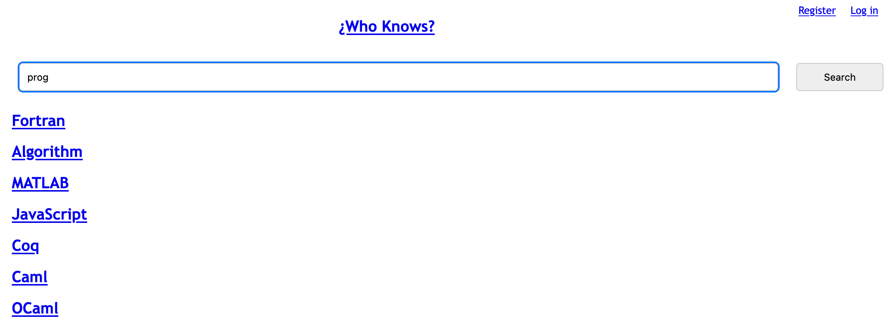

<div class="title-card" style="color: cyan;"> <h1>Welcome to DevOps</h1> </div> --- # Meta-course introductions This week: About the course Next week: About the exam --- # Course platforms ### Teams - Communication - Hand-ins ### GitHub - Assignments - Slides - Code - Tutorials The course repository is pinned in the General Teams channel! --- # About the course https://github.com/who-knows-inc/KEA_DAT_DevOps_2024_Autumn/blob/main/00._Course_Material/00._Meta_Course_Material/about_the_course.md --- # Motivation - Why you would want to work hard at this course Good preparation for your internship next semester. Closest to real life. Most lessons learned will prove useful in your professional career. --- # Weekly DevOps pep-talk! **Collaborate!** DevOps Principle: **Continuous improvement and learning!** --- # Group work Let's line you up to match your ambitions. --- # Let's form groups! 3 - 5 students. --- <div class="title-card" style="color: cyan;"> <h1>A small rant</h1> </div> --- # What is DevOps? We aim to be able to answer this by the end of the course. It won't be the focus until a couple of weeks in. But let it be know, that you have not done DevOps at KEA yet. DevOps is not a protected title and the understanding of it has changed through the years. --- # Is it DevOps? DevOps is **not** just technology. It's **culture**. But... <img src="./assets/devops_technologies.png" alt="devops 8" style="height: 35vh;"> [Source](https://shalb.com/blog/what-is-devops-and-where-is-it-applied/) Just like how being 10% agile doesn't make you agile at all. A good gauge is to ask, "How do you monitor?" --- # The exam question - Are we DevOps? At the exam you will be expected to reflect as a team and answer these two questions: 1. What made you DevOps? 2. In what ways were you not DevOps? --- <div class="title-card" style="color: cyan;"> <h1>The legacy project</h1> </div> --- # This is how it all started --- # The story A group of students tried to develop a search engine in 2009 with the latest technology at its time. They called it: `¿Who Knows?`. <img src="./assets/monkgroup.png" alt="monk group legacy team" style="height: 45vh;"> --- # What they managed to create - a backend - a frontend - an SQLite database (containing scraped Wikipedia articles about programming) --- # Website screenshot  --- # But it was abandoned After they presented their main thesis in January 2010, the project was abandoned. The stack is outdated and the code is not maintained. The code is in many ways flawed. The database contains outdated content from that date or prior. Your group will inherit their legacy code. But it's too much to rewrite it in one go. We need CI/CD pipelines to help us rewrite in increments. --- # It will be your job to: - Analyze the code for flaws - Modernize the stack - Update the database content But as a starting point, we need to get the code. --- <div class="title-card"> <h1><a href="https://en.wikipedia.org/wiki/Software_archaeology">Source code archeology</a></h1> </div> --- # The only thing we managed to dig up - An IP address. - Username - Password Question: *Now what?* --- # SSH ```bash ssh <username>@<ip_address> ``` <!-- Optionally, to force it to use password instead of key (this might not be needed for you): ``` ssh -o PreferredAuthentications=password -o <username>@<ip_address> ``` --> Username: `monkgroup` Password: `blackmonktime!` IP address: `52.178.191.100` --- # How do we check if anything is running? And on which port? There are multiple ways to do it. *Can you think of one?* --- # **P**rocess **s**tatus with `ps` List all processes: ```bash $ sudo ps aux ``` Too much output. Let's filter with `grep` (Global Regular Expression Print): ```bash $ sudo ps aux | grep python ``` Maybe not so useful. --- # List open files The `-i` flag specifies network files. ```bash $ sudo lsof -i ``` The port is listed as: `*:http-alt` <details> <summary>Question: What port is that?</summary> Port 8080 </details> Or use the network ports flag (`-nP`) to see the port number. ```bash $ sudo lsof -i -nP ``` --- # Doing it again with `netstat` ```bash $ sudo netstat -tuln ``` `t`: TCP `u`: UDP `l`: listening to ports `n`: numeric output (no DNS lookup) --- # Where is the code? --- # We found some code How do we get it locally? --- # Secure copy From your **local machine** (not ssh'd), run this command: ```bash $ scp -r <username>@<ip_address>:/path/to/directory /path/to/destination ``` The `-r` flag is required because we are retrieving a directory. Replace `/path/to/directory` with `/home/`. Try to figure out the rest. Absolutely DO NOT run this while ssh'd into the server! --- <div class="title-card" style="color: cyan;"> <h1>Watch along section - Running it locally</h1> </div> --- # This section requires to have `python2` installed Windows: You can install it with `chocolatey`: ```powershell $ choco install python2 ``` Mac: You can install it with `homebrew`: ```bash $ brew install python@2 ``` Python 2 is outdated. The point is that after today you should not need it again for this course. You can choose to install it, if it's simple or lean back and watch and try to answer the questions. --- # Python versions Write Python in your terminal and hit `tab` to see suggestions. What do you see? Do you see `python2`? Note that `python2` and `python3` are shorthand for the highest available version of Python 2 and Python 3 respectively. Additionally, in my tutorials I might write `python` instead of `python3`. That's because, I have an alias that runs the latest version of Python 3 when I type `python`. You can consider setting that up too. --- # I will run it. *Problems?* --- # We didn't get the database *Where is the database?* *What is the command to get it?* --- # Getting the database ```bash $ scp monkgroup@<ip_address>:/tmp/whoknows.db . ``` --- # I will run it ```bash $ python main.py ``` The problem is that it has valid Python 2 syntax but not valid Python 3 syntax. Instead of remembering the syntax, we can use a tool to help us with the different commands. --- # `Make` A build automation tool. Allows us to run commands. [https://en.wikipedia.org/wiki/Make_(software)](https://en.wikipedia.org/wiki/Make_(software)) Actions are defined in a `Makefile`. Can you find it? --- # Install `make` Comes with *nix. The following is only needed for Windows users: ```powershell $ choco install make ``` --- # Run using `make` Execute the command where the `Makefile` is located. ```bash $ make run ``` --- # Any more snooping suggestions? --- <div class="title-card" style="color: cyan;"> <h1>Conclusion</h1> </div> --- # We now enter start-up mode The most exciting times with lots of small tasks to do! --- # What now? If time permits, this is how we aim to finish every week. 1. Q&A session based on previous week's work (prepare questions ahead of class) 2. Go through all the course work + Q&A session 3. Coordinate with your groups (if time allows)